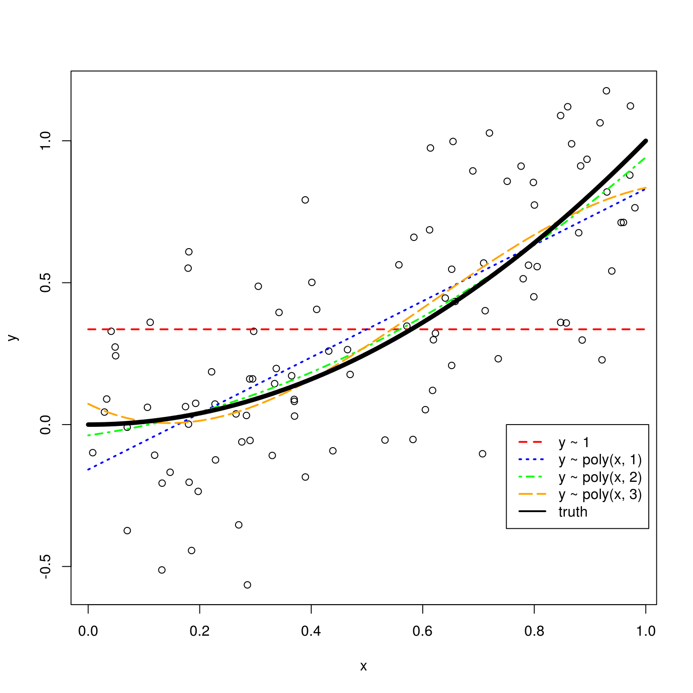
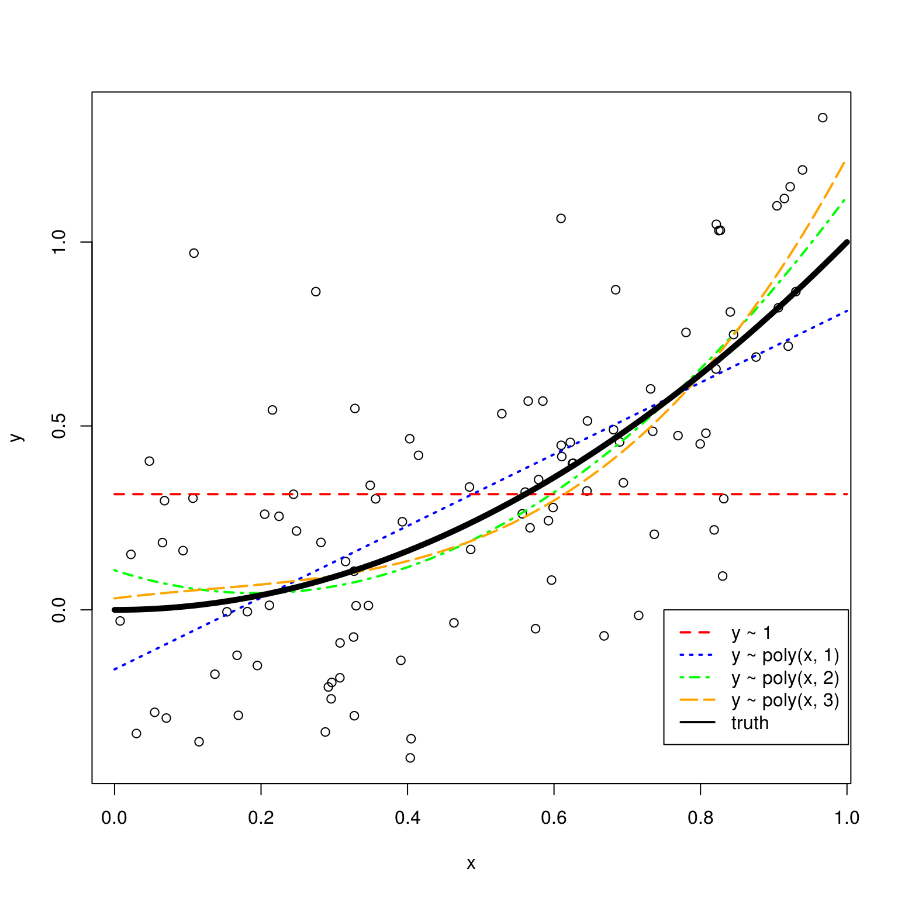

Chapter 12 Simulating the Bias–Variance Tradeoff
Consider the general regression setup
\[ y = f(\mathbf x) + \epsilon \]
with
\[ E[\epsilon] = 0 \quad \text{and} \quad \text{var}(\epsilon) = \sigma^2. \]
12.1 Bias-Variance Decomposition
Using \(\hat{f}(\mathbf x)\), trained with data, to estimate \(f(\mathbf x)\), we are interested in the expected prediction error. Specifically, considered making a prediction of \(y_0 = f(\mathbf x_0) + \epsilon\) at the point \(\mathbf x_0\).
In that case, we have
\[ E\left[\left(y_0 - \hat{f}(\mathbf x_0)\right)^2\right] = \text{bias}\left(\hat{f}(\mathbf x_0)\right)^2 + \text{var}\left(\hat{f}(\mathbf x_0)\right) + \sigma^2. \]
Recall the definition of the bias of an estimate.
\[ \text{bias}\left(\hat{f}(\mathbf x_0)\right) = E\left[\hat{f}(\mathbf x_0)\right] - f(\mathbf x_0) \]
So, we have decomposed the error into two types; reducible and irreducible. The reducible can be further decomposed into the squared bias and variance of the estimate. We can “control” these through our choice of model. The irreducible, is noise, that should not and cannot be modeled.
12.2 Simulation
We will illustrate this decomposition, and the resulting bias-variance tradeoff through simulation. Suppose we would like a train a model to learn the function \(f(x) = x^2\).
f = function(x) {
x ^ 2
}More specifically,
\[ y = x^2 + \epsilon \] where
\[ \epsilon \sim N(\mu = 0, \sigma^2 = 0.3^2). \]
We write a function which generates data accordingly.
get_sim_data = function(f, sample_size = 100) {
x = runif(n = sample_size, min = 0, max = 1)
y = f(x) + rnorm(n = sample_size, mean = 0, sd = 0.3)
data.frame(x, y)
}To get a sense of the data, we generate one simulated dataset, and fit the four models that we will be of interest.
sim_data = get_sim_data(f, sample_size = 100)
fit_1 = lm(y ~ 1, data = sim_data)
fit_2 = lm(y ~ poly(x, degree = 1), data = sim_data)
fit_3 = lm(y ~ poly(x, degree = 2), data = sim_data)
fit_4 = lm(y ~ poly(x, degree = 3), data = sim_data)Plotting these four trained models, we see that the zero predictor model (red) does very poorly. The single predictor model (blue) is reasonable, but we can see that the two (green) and three (orange) predictor models seem more appropriate. Between these latter two, it is hard to see which seems more appropriate.
set.seed(430)
plot(y ~ x, data = sim_data)
grid = seq(from = 0, to = 1, by = 0.01)
lines(grid, predict(fit_1, newdata = data.frame(x = grid)),
col = "red", lwd = 2, lty = 2)
lines(grid, predict(fit_2, newdata = data.frame(x = grid)),
col = "blue", lwd = 2, lty = 3)
lines(grid, predict(fit_3, newdata = data.frame(x = grid)),
col = "green", lwd = 2, lty = 4)
lines(grid, predict(fit_4, newdata = data.frame(x = grid)),
col = "orange", lwd = 2, lty = 5)
lines(grid, f(grid), col = "black", lwd = 5)
legend(x = 0.75, y = 0,
c("y ~ 1", "y ~ poly(x, 1)", "y ~ poly(x, 2)", "y ~ poly(x, 3)", "truth"),
col = c("red", "blue", "green", "orange", "black"), lty = c(2, 3, 4, 5, 1), lwd = 2)
We will now use simulation to estimate the bias, variance, and mean squared error for the estimates for \(f(x)\) given by these models at the point \(x_0 = 0.95\). We use simulation to complete this task, as performing the exact calculations are always difficult, and often impossible.
set.seed(1)
n_sims = 1000
n_models = 4
x0 = 0.95
predictions = matrix(0, nrow = n_sims, ncol = n_models)
sim_data = get_sim_data(f, sample_size = 100)
plot(y ~ x, data = sim_data, col = "white", xlim = c(0.75, 1), ylim = c(0, 1.5))
for (i in 1:n_sims) {
sim_data = get_sim_data(f, sample_size = 100)
fit_1 = lm(y ~ 1, data = sim_data)
fit_2 = lm(y ~ poly(x, degree = 1), data = sim_data)
fit_3 = lm(y ~ poly(x, degree = 2), data = sim_data)
fit_4 = lm(y ~ poly(x, degree = 3), data = sim_data)
lines(grid, predict(fit_1, newdata = data.frame(x = grid)), col = "red", lwd = 1)
# lines(grid, predict(fit_2, newdata = data.frame(x = grid)), col = "blue", lwd = 1)
# lines(grid, predict(fit_3, newdata = data.frame(x = grid)), col = "green", lwd = 1)
lines(grid, predict(fit_4, newdata = data.frame(x = grid)), col = "orange", lwd = 1)
predictions[i, ] = c(
predict(fit_1, newdata = data.frame(x = x0)),
predict(fit_2, newdata = data.frame(x = x0)),
predict(fit_3, newdata = data.frame(x = x0)),
predict(fit_4, newdata = data.frame(x = x0))
)
}
points(x0, f(x0), col = "black", pch = "x", cex = 2)
The above plot shows the 1000 trained models for each of the zero predictor and three predictor models. (We have exlcuded the one and two predictor models for clarity of the plot.) The truth at \(x_0 = 0.95\) is given by a black “X”. We see that the red lines for the zero predictor model are on average wrong, with some variability. The orange lines for the three predictor model are on average correct, but with more variance.
12.3 Bias-Variance Tradeoff
To evaluate the bias and variance, we simulate values for the response \(y\) at \(x_0 = 0.95\) according to the true model.
eps = rnorm(n = n_sims, mean = 0, sd = 0.3)
y0 = f(x0) + epsR already has a function to calculate variance, however, we add functions for bias and mean squared error.
get_bias = function(estimate, truth) {
mean(estimate) - truth
}
get_mse = function(estimate, truth) {
mean((estimate - truth) ^ 2)
}When then use the predictions obtained from the above simulation to estimate the bias, variance and mean squared error for estimating \(f(x)\) at \(x_0 = 0.95\) for the four models.
bias = apply(predictions, 2, get_bias, f(x0))
variance = apply(predictions, 2, var)
mse = apply(predictions, 2, get_mse, y0)We summarize these results in the following table.
| Model | Squared Bias | Variance (Of Estimate) | MSE |
|---|---|---|---|
fit_1 |
0.322916 | 0.001784 | 0.4201411 |
fit_2 |
0.0136794 | 0.0036355 | 0.1145159 |
fit_3 |
0.0000036 | 0.0058178 | 0.1031294 |
fit_4 |
0.0000009 | 0.0079906 | 0.1053599 |
A number of things to notice here:
- We use squared bias in this table. Since bias can be positive or negative, squared bias is more useful for observing the trend as complexity increases.
- The squared bias trend which we see here is decreasing bias as complexity increases, which we expect to see in general.
- The exact opposite is true of variance. As model complexity increases, variance increases.
- The mean squared error, which is a function of the bias and variance, decreases, then increases. This is a result of the bias-variance tradeoff. We can decrease bias, by increases variance. Or, we can decrease variance by increasing bias. By striking the correct balance, we can find a good mean squared error.
We can check for these trends with the diff() function in R.
all(diff(bias ^ 2) < 0)## [1] TRUEall(diff(variance) > 0)## [1] TRUEdiff(mse)## [1] -0.305625170 -0.011386537 0.002230515Notice that the table lacks a column for the variance of the noise. Add this to squared bias and variance would give the mean squared error. However, notice that we are simulation to estiamte the bias and variance, so the relationship is not exact. If we used more replications of the simulation, these two values would move closer together.
bias ^ 2 + variance + var(eps)## [1] 0.4209744 0.1135892 0.1020958 0.1042659mse## [1] 0.4201411 0.1145159 0.1031294 0.1053599